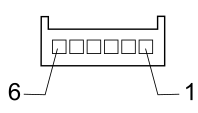

M092 STEERING ANGLE CONTROL UNIT (NAS) (DASHBOARD)
- Path
- Electrical equipment > 3 CONNECTORS > M INTERMITTENT AND TIMED ELECTRONIC DEVICES > M092 STEERING ANGLE CONTROL UNIT (NAS) > M092 STEERING ANGLE CONTROL UNIT (NAS) (DASHBOARD)
- Kind
- connector pinout (pin -> wire colour -> other end)
- Applies to
- all engines; all production periods
- Interactive page
- https://sloeber94.github.io/elrnDB-fCrm/en/#/194005340
Applies to: all engines; all production periods

Wiring | Colour |
|---|---|
_ |
Pin | Cable | Destination | |||
|---|---|---|---|---|---|
Sec.. | Colour | Node | Connect. | Pin | |
1 | 0,5 | M (brown) | 3 | ||
2 | 0,5 | M (brown) | 17 | ||
3 | 0,5 | V (green) | 2 | ||
4 | 0,5 | V (green) | 18 | ||
5 | 0,5 | LN (blue with black stripe) | 8 | ||
6 | 0,5 | N (black) | X | 8 | |
6 | |||||